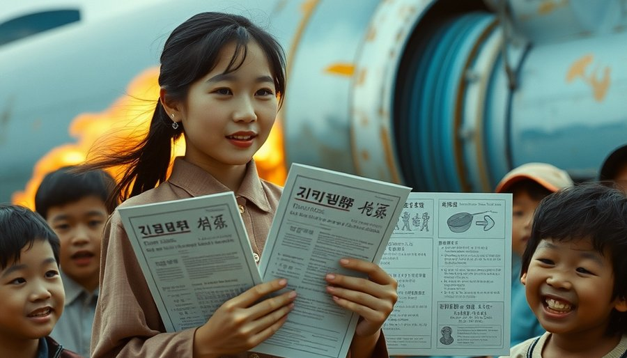
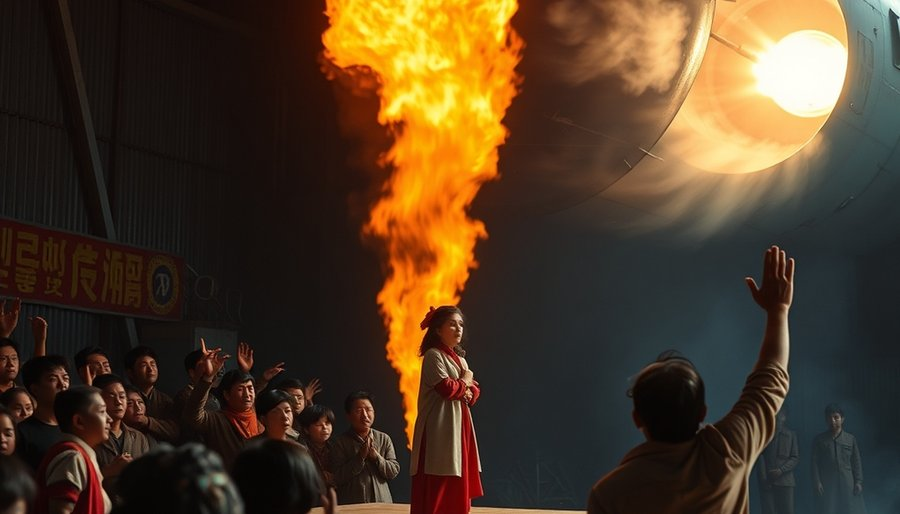

电影里，朴贤珠进村那天，村口围了一群人。孩子们追着她跑，老人叼着烟杆斜眼看。她穿着城里人的衣服，手里抱着厚厚一沓宣传册，开口就是“子宫内避孕器”“输精管结扎”。村民听不懂，也不想懂。有人直接问：“姑娘，你自个儿试过没？”她涨红了脸，答不上来。全村哄笑。
只有一个男人没笑。他叫变石九，是村里最穷的。四个孩子，最大的刚会割草，最小的还在吃奶。债主三天两头上门，他老婆累得直不起腰。变石九站在朴贤珠这边，原因很现实：他欠一屁股债，觉得跟着国家干，说不定能捞点好处。可他一个大老粗能做什么？他干了一件谁都没想到的事：当翻译。
朴贤珠说的那些词，村民听不懂。变石九用俚语一翻译，全懂了。“避孕”就是“那事儿少做”；“结扎”就是“把水管子扎起来”；“避孕套”就是“那玩意儿”。电影里，他就这么成了村里的“生育翻译官”，闹出一连串笑话。有一场戏，他示范怎么用避孕套，结果套在手指上吹成气球，全村小孩追着要。
这部电影的导演叫安镇宇，主演是李范秀和金正恩。2006年上映时，韩国刚经历过金融危机不久，中秋档需要一部让人忘掉压力的喜剧。可这部喜剧背后，站着一部真实历史。
据人口统计，1960年，韩国一个妇女平均生6个孩子。人多地少，经济刚起步，政府着急了。1961年，朴正熙政府把家族计划写进第一个经济开发五年计划。这在当时亚洲是头一份。国家开始像管工厂一样管生育：设目标，发避孕套，搞结扎手术。1962年，韩国成立“家族计划协会”，培训大量家庭计划要员。到1970年代，全国有数千名这样的要员，多数是女性，被派往农村。她们走村串户，统计生育，发放药具。据史料，当年一些农村地区，连避孕套怎么用都要派人教。电影里的笑话，现实里真实发生过。那个被村民嘲笑的朴贤珠，背后是整整一代人的荒诞记忆。

电影继续往下走。朴贤珠的工作寸步难行。她挨家挨户发避孕套，村民当面收下，转身扔进灶膛。她办讲座，底下人打瞌睡，还有人故意打呼噜。变石九帮她，可连他自己也管不住：他老婆又怀上了。村里老人说：“多子多福，国家管得着吗？”朴贤珠拿出上级给的指标本，上面写着：龙头里村，年度避孕率必须达到百分之多少。可指标是死的，人是活的。
冲突闹到顶点，是在一次村民大会上。朴贤珠站在台上，苦口婆心劝大家少生。底下突然有人喊：“要我们不生也可以，你让国家把我们全村的债还了！”全场安静了一秒，接着炸了锅。有人骂他异想天开，有人却觉得这主意不错。变石九第一个站起来支持，因为他最需要还债。
电影里，朴贤珠竟然真的去跟上级谈。她坐长途车进城，找到管家族计划的官员，把村民的条件摆出来。官员先是一愣，然后问：“只要还清债务，他们就答应不再生？”朴贤珠点头。官员沉吟片刻，说：“只要能完成指标，还债也行。”电影里，上级还真的算了一笔账：全村债务多少，如果这些家庭继续生，国家未来要花多少钱扶贫。算下来，一次性还债更划算。这笔荒诞的交易，就这么谈成了。国家替龙头里村还清所有债务，全村人答应不再生孩子。影片结尾，龙头里成了“零出生率模范村”，债务清零，朴贤珠完成任务离开，变石九当上村长，皆大欢喜。观众看到这里，笑到拍大腿。
据这部2006年的影片，这个交易是剧本编的。但它的原型不是凭空来的。史料记载，1963年，韩国在京畿道高阳郡搞过计划生育试点；1964到1966年，又在首尔城东区继续试点。试点是真的，交易是剧本。可那种“国家跟你商量晚上的事”的逻辑，是真的。当年，韩国政府为了压低生育率，确实用过奖惩手段：给做结扎的人发补贴，给多生的人设限制。1970年代，一些农村地区甚至把计划生育跟贷款、救济挂钩。电影只是把这种逻辑推到了极致，推到让人发笑的程度。
电影2006年上映，观众笑着走出影院。可那时候，现实已经开始变味了。
韩国的生育率一路下滑。1960年还是6.0，1970年降到4.5，1983年跌破2.08——这是世代更替水平，人口开始负增长。1989年，政府停止免费避孕服务；1996年，正式废除人口抑制政策。国家用了三十多年，终于承认：靠行政命令管生育，管出大麻烦了。可麻烦已经长成了。
更早的代价在1980年代就埋下了。计划生育推行二十多年，加上B超技术普及，很多家庭选择生儿子。据官方出生统计，1986年出生性别比达到111.7，1990年更升到116.5。第三胎以上最夸张：189.3，每100个女孩，对应189个男孩。人口学者估算，1980到2010年，韩国多出了约70万到80万过剩男性。这些男孩长大后，发现找不到媳妇。电影里那个被劝着别生的村子，如果真存在，三四十年后，可能就是光棍村。据媒体报道，韩国农村地区光棍问题日益严重，跨国婚姻比例逐年升高。那些多出来的男孩，如今已到中年，他们中的许多人终身未婚。
2005年，韩国总和生育率跌到1.08，政府慌了，紧急通过《低生育高龄社会基本法》。政策彻底转向。从逼人少生，变成求人多生。补贴、减税、试管补助，什么都给。可年轻人不买账。2022年，韩国总和生育率跌到0.78，全球最低。首尔一家妇产医院关闭产房，改成养老院。小学招不到学生，关门大吉。满街的育儿补贴广告，比当年的避孕宣传册还多。可产房里，安静得很。
回到电影本身。当年那部喜剧，英文名直译“性控制任务”，海报上写着“国民们！晚上的事，请跟我们商量”。这句话放在2006年，是个笑点。放到今天，更像一个黑色幽默。
2022年，韩国政府推出“生育支援金”，生一个孩子给几千万韩元。2023年，有议员提出“30岁前生三个孩子免兵役”。国家真的想商量了，姿态低到尘埃里。可年轻人回答一个字：不。不是抗议，是沉默。不结婚，不生孩子，甚至不约会。媒体给这一代人起了个名字：“三抛世代”——抛弃恋爱、抛弃结婚、抛弃生育。
电影里，变石九被问到为什么生四个，他挠挠头，说出一句让全场爆笑的理由。今天，年轻人不生，理由也很简单：房价太高，教育太贵，工作太累。国家没有命令他们不生，是他们自己算账，算出来不划算。当年国家把最私密的事当成指标，用行政力量压下去，漂亮的数据拿到了。可指标会撒谎，代价迟到三十年，最后落在最不该承担的人身上。
2006年中秋档，全家老小笑着看完那部喜剧。今天再翻出来看，笑点还是笑点，但笑着笑着可能就笑不出来了。电影里龙头里村靠不生还清了债，现实中，整个国家正在为当年的“不生”还债。
余波
那部电影的中文名常被译作《好好过日子》。一个劝人别生孩子的喜剧，成了国民爆款。海报上那句话还在：“国民们！晚上的事，请跟我们商量。”只是现在，没人找国家商量了。年轻人晚上有事干，只是不生孩子了。当年国家把最私密的事当成指标，漂亮的数据拿到了。可指标会撒谎，代价迟到三十年，最后落在最不该承担的人身上。
小汪老师的成长观察笔记